Giải thuật nền tảng của Khoa học dữ liệu
Học kỳ 1, năm học 2026–2027
Tính PageRank theo chủ đề, TrustRank, Spam Mass và điểm HITS; giải thích tác động của cụm thao túng liên kết; chọn phương pháp theo đầu ra cần tạo.
Nguồn: MMDS, §5.3–5.5, tr.195–208.
Truy vấn: “jaguar”.
Ưu tiên các trang về loài báo đốm.
Ưu tiên các trang về hãng xe Jaguar.
Dữ liệu: trang web và liên kết. Đầu ra: thứ tự trang theo chủ đề đã xác định.
PageRank toàn cục cho cùng một thứ tự trong cả hai ngữ cảnh. Khi biết chủ đề người dùng quan tâm, điểm xếp hạng cần phụ thuộc chủ đề đó.
Nguồn: MMDS, §5.3.1, tr.195–196.
Phương án trực tiếp: mỗi người dùng có một vector PageRank riêng trên toàn web.
Quy mô minh họa trong MMDS: khoảng một tỷ người dùng, mỗi vector có nhiều tỷ thành phần. Phương án theo chủ đề lưu $k$ vector toàn web; mỗi người dùng chỉ cần $k$ trọng số, đổi lại mất một phần độ chính xác.
Nguồn: MMDS, §5.3.1–5.3.2, tr.195–196.
| Hạn chế của PageRank toàn cục | Yêu cầu đối với điểm |
|---|---|
| Cùng truy vấn ở hai ngữ cảnh nhận cùng một thứ tự | Điểm phụ thuộc chủ đề |
| Liên kết có thể được tạo ra để làm tăng điểm một trang | Điểm ít chịu tác động của liên kết thao túng |
| Một điểm duy nhất không tách trang dẫn tới thông tin khỏi trang cung cấp thông tin | Hai điểm cho hai vai trò |
Mỗi yêu cầu cho điểm xếp hạng một ý nghĩa riêng và cần một phép tính riêng.
Nguồn: MMDS, §5.3.1, §5.4.1, §5.5.1, tr.195–205.
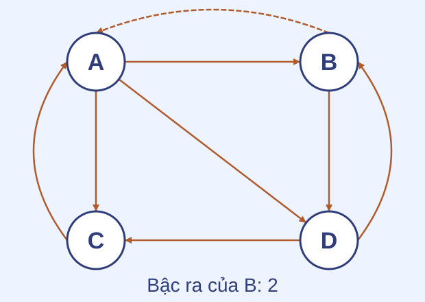
Đồ thị G4
Giả sử $r_A=r_B=r_C=r_D=1/4$ và $\beta=4/5$.
Câu hỏi: Tính phần điểm theo liên kết mà B chuyển tới A. Xác định phần tử tương ứng trong ma trận $M_0$ với quy ước cột là trang nguồn.
Nguồn: MMDS, §5.1.2; Hình 5.15, tr.197.
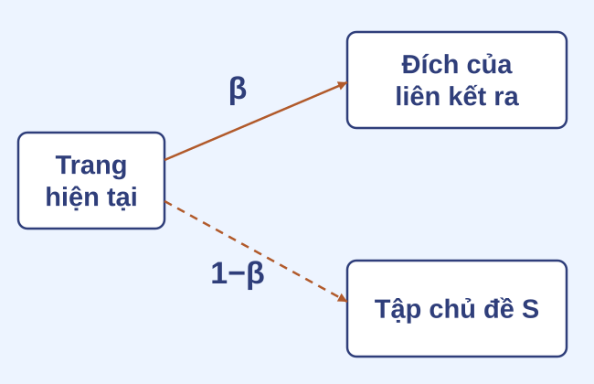
Với xác suất $\beta$: đi theo một liên kết ra, chia đều giữa các liên kết.
Với xác suất $1-\beta$: dịch chuyển tới tập chủ đề $S$; Bài 03 chọn đều trong $n$ trang.
Các trang ngoài $S$ vẫn có thể nhận điểm qua liên kết. Đồ thị liên kết được giữ nguyên.
Nguồn: MMDS, §5.3.2, tr.196.
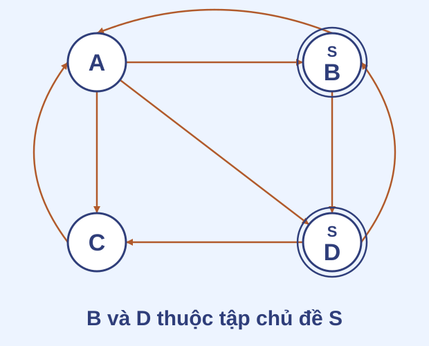
$\beta=4/5$, $S=\{B,D\}$; thứ tự thành phần A, B, C, D.
$v$ là phân phối chọn trang đích khi thực hiện dịch chuyển: $$v=(0,1/2,0,1/2)^\mathsf T.$$
Cập nhật trên G4 (không có nút cụt), khởi tạo $r^0=v$: $$r^{t+1}=\beta M_0r^t+(1-\beta)v.$$
Mỗi vòng thêm $(1-\beta)v$: B, D nhận $1/10$; A, C nhận $0$.
Nguồn: MMDS, Ví dụ 5.10, Hình 5.15, tr.196–197.
$r^0=(0,1/2,0,1/2)^\mathsf T$, $\beta=4/5$, $S=\{B,D\}$. G4: A→B, C, D; B→A, D; C→A; D→B, C.
| Trang | Theo liên kết $\beta(M_0r^0)_i$ | Dịch chuyển $(1-\beta)v_i$ | Điểm mới $r_i^1$ |
|---|---|---|---|
| A | $1/5$ | $0$ | $1/5$ |
| B | $1/5$ | $1/10$ | $3/10$ |
| C | $1/5$ | $0$ | $1/5$ |
| D | $1/5$ | $1/10$ | $3/10$ |
Tại A: $(4/5)[(1/2)(1/2)+1\cdot0]=1/5$. Tổng điểm mới bằng 1.
Nguồn: MMDS, Ví dụ 5.10, tr.196–197.
Tại A ở vòng 2: $r_A^2=\tfrac45\big(\tfrac12\cdot\tfrac3{10}+\tfrac15\big)=\tfrac7{25}$.
| Trang | $r^1$ | $r^2$ | Điểm cố định $r^*$ |
|---|---|---|---|
| A | $1/5$ | $7/25$ | $9/35$ |
| B | $3/10$ | $41/150$ | $59/210$ |
| C | $1/5$ | $13/75$ | $19/105$ |
| D | $3/10$ | $41/150$ | $59/210$ |
$r^*$ là nghiệm của $r=\beta M_0r+(1-\beta)v$, $\sum_ir_i=1$: phân phối không đổi (Bài 03).
B và D có điểm cố định lớn hơn A; các trang ngoài $S$ vẫn có điểm dương.
Nguồn: MMDS, Ví dụ 5.10, tr.196–197.
Đầu vào: đồ thị $G=(V,E)$, $n\ge1$; phân phối $v\ge0$, $\sum_i v_i=1$; $0<\beta<1$; ngưỡng $\tau>0$ và số vòng tối đa $K\ge1$.
Khi có nút cụt, $\delta^t=\sum_{j:d_j=0}r_j^t$ được bù đều theo $u_i=1/n$ như Bài 03; G4 có $\delta^t=0$.
Đầu ra: vector xấp xỉ và trạng thái đạt ngưỡng hoặc hết số vòng.
Nguồn: MMDS, §5.3.2; §5.1.4–5.1.5, tr.183–188, 196.
r ← v
với t = 0, ..., K - 1:
delta ← tổng r[j] trên các nút cụt
với mỗi i: new[i] ← beta * delta / n + (1 - beta) * v[i]
với mỗi j có d[j] > 0:
với mỗi i thuộc out[j]:
new[i] ← new[i] + beta * r[j] / d[j]
Delta ← tổng |new[i] - r[i]|
r ← new
nếu Delta ≤ tau: trả về (r, đạt ngưỡng)
trả về (r, hết số vòng)
delta là $\delta^t$, điểm ở nút cụt; Delta là $\|r^{t+1}-r^t\|_1$, dùng để dừng. Mọi đóng góp trong một vòng dùng cùng vector điểm cũ.
Nguồn: MMDS, §5.3.2; §5.2.1, tr.191–192, 196.
Giả sử $r^t\ge0$ và $\sum_i r_i^t=1$.
| Thành phần | Tổng điểm đóng góp |
|---|---|
| Theo cạnh từ các trang không cụt | $\beta(1-\delta^t)$ |
| Bù nút cụt | $\beta\delta^t$ |
| Dịch chuyển theo $v$ | $1-\beta$ |
Lập luận của Bài 03 giữ nguyên; điều kiện mới duy nhất là $v\ge0$, $\sum_iv_i=1$. Khởi tạo $r^0=v$ thỏa giả thiết.
Nguồn: MMDS, §5.3.2; §5.1.5, tr.185–188, 196.
$\bar M$: $M_0$ với mỗi cột nút cụt thay bằng $u$ (ma trận $S$ của Bài 03); $\bar M\ge0$, tổng mỗi cột bằng $1$.
Với $F(r)=\beta\bar Mr+(1-\beta)v$ và $0<\beta<1$: $\|F(p)-F(q)\|_1\le\beta\|p-q\|_1$ (Bài 03). Khoảng cách sau cập nhật không vượt $\beta$ lần khoảng cách trước (tính co), nên có duy nhất một điểm cố định $r^*$.
Đặt $\Delta=\|r^{t+1}-r^t\|_1$; các sai khác sau đó không quá $\beta\Delta,\beta^2\Delta,\ldots$, nên $$\|r^{t+1}-r^*\|_1\le\beta\Delta+\beta^2\Delta+\cdots=\frac{\beta}{1-\beta}\Delta.$$
Với $\beta=4/5$, cận sai số là $4\Delta$.
Nguồn: MMDS, §5.1.5 và §5.3.2, tr.185–188, 196; lập luận co từ Bài 03.
Có $k$ chủ đề. Từ đây $j=1,\ldots,k$ chỉ chủ đề, $i$ chỉ trang, $t$ chỉ vòng lặp.
| Ký hiệu | Vai trò |
|---|---|
| $v^{(j)}\in\mathbb R^n$ | Phân phối dịch chuyển đầu vào của chủ đề $j$ |
| $r^{(j)}\in\mathbb R^n$ | Điểm cố định PageRank của chủ đề $j$ trên $n$ trang |
Mỗi chủ đề dùng cùng $\bar M$ và $\beta$: $$r^{(j)}=\beta\bar Mr^{(j)}+(1-\beta)v^{(j)}.$$
Nguồn: MMDS, §5.3.2, tr.196; §5.3.4, tr.199.
Chọn các phân phối $v^{(j)}$.
Tính và lưu các vector $r^{(j)}$ trên toàn bộ $n$ trang.
Xác định trọng số $w_j\ge0$, $\sum_jw_j=1$, theo ngữ cảnh và tập trang ứng viên $C$.
Với từng $i\in C$, ghép:
$$q_i=\sum_{j=1}^k w_jr_i^{(j)}.$$
Với “jaguar”: trọng số lớn cho chủ đề động vật hoặc ô tô, tùy ngữ cảnh. Khi có truy vấn chỉ ghép điểm đã lưu, không lặp lại PageRank.
Nguồn: MMDS, §5.3.1–5.3.4, tr.195–199.
Giữ cùng $\bar M$, $\beta$; $w_j\ge0$ và $\sum_jw_j=1$.
Nhân phương trình của chủ đề $j$ với $w_j$, rồi cộng:
$$\sum_jw_jr^{(j)}=\beta\bar M\sum_jw_jr^{(j)}+(1-\beta)\sum_jw_jv^{(j)}.$$
Tổng có trọng số thỏa phương trình PageRank với $v$. Điểm cố định là duy nhất, nên tổng này bằng $r^*$.
Điểm ghép $q_i$ khi có truy vấn bằng đúng $r_i^*$ với $v=\sum_jw_jv^{(j)}$; mỗi người dùng chỉ cần $k$ trọng số.
Nguồn: MMDS, §5.3.2, tr.196; §5.3.4, tr.199; suy ra từ phương trình cố định.
Mô hình: phép toán vô hướng chi phí đơn vị; $n$ đỉnh, $\ell$ cạnh, danh sách kề.
| Công việc | Khối lượng mỗi vòng |
|---|---|
| Cộng điểm theo liên kết | $\ell$ cạnh |
| Bù, dịch chuyển, so sánh | Số lượt cố định trên $n$ đỉnh |
Mỗi vòng $\Theta(n+\ell)$; $k$ chủ đề, tối đa $K$ vòng: $O(kK(n+\ell))$.
Bộ nhớ: đầu vào $\Theta(n+\ell)$, phụ $\Theta(n)$; lưu kết quả $\Theta(kn)$ số.
Mỗi $i\in C$ cần $k$ phép nhân–cộng: tổng $\Theta(kc)$, $c=|C|$.
Chưa gồm tìm ứng viên, xác định $w_j$ và sắp xếp.
Nguồn: MMDS, §5.2.1; §5.3.2–5.3.3, tr.191–192, 196–198; phép đếm suy ra từ giả mã.
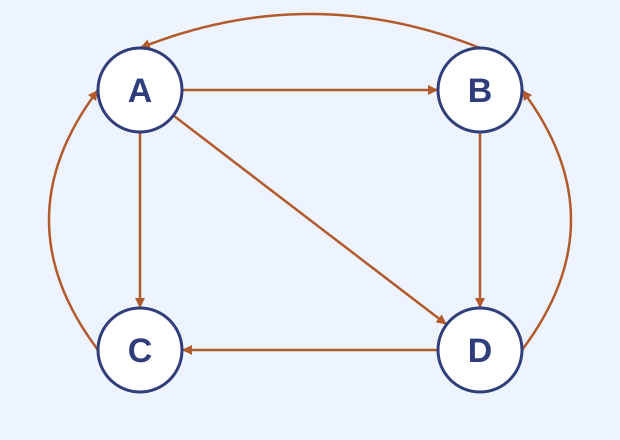
$\beta=4/5$, $S=\{B,D\}$.
$r^1=(1/5,3/10,1/5,3/10)^\mathsf T$
$r^2=(7/25,41/150,13/75,41/150)^\mathsf T$
Câu hỏi:
Tính $r_C^3$ và chỉ rõ các trang đóng góp.
Tính $\Delta=\|r^2-r^1\|_1$ và cận $\beta\Delta/(1-\beta)$ cho sai số của $r^2$.
Nguồn: MMDS, Ví dụ 5.10, Hình 5.15, tr.196–197.
PageRank cộng điểm theo liên kết vào. Liên kết rác được tạo để làm tăng điểm một trang không tương xứng với giá trị nội dung.
Đồ thị liên kết; PageRank dịch chuyển đều.
Thêm liên kết ở trang sở hữu hoặc được phép đăng.
Tập trung điểm tại trang đích.
Vấn đề: định lượng mức một cấu trúc liên kết đơn giản làm tăng điểm trang đích.
Nguồn: MMDS, §5.4.1, tr.199–200.
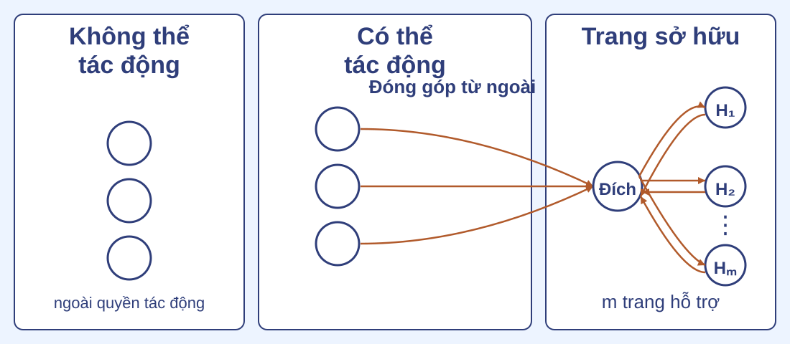
Đích trỏ tới $m$ trang hỗ trợ; mỗi hỗ trợ chỉ trỏ lại đích.
Liên kết từ ngoài cụm chỉ vào đích.
Giả thiết: đồ thị không có nút cụt; $m\ge1$, $n\ge m+1$.
Nguồn: MMDS, §5.4.2, Hình 5.16, tr.200–201.
Ký hiệu: $y$, $p$ là điểm cố định của đích và của mỗi trang hỗ trợ; $b=(1-\beta)/n$.
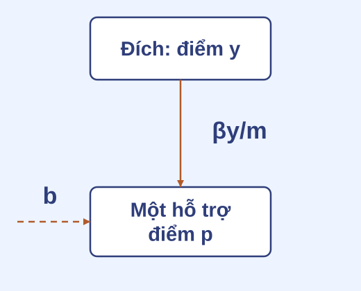
Đích có đúng $m$ liên kết ra; mỗi hỗ trợ chỉ nhận cạnh từ đích.
| Nguồn điểm tại một hỗ trợ | Đóng góp |
|---|---|
| Điểm theo cạnh từ đích | $\beta y/m$ |
| Dịch chuyển đều | $b$ |
Nguồn: MMDS, §5.4.2, tr.201.
$x$ là tổng đóng góp theo các cạnh từ ngoài tới đích, đã nhân $\beta$ và chia bậc ra tại nguồn.
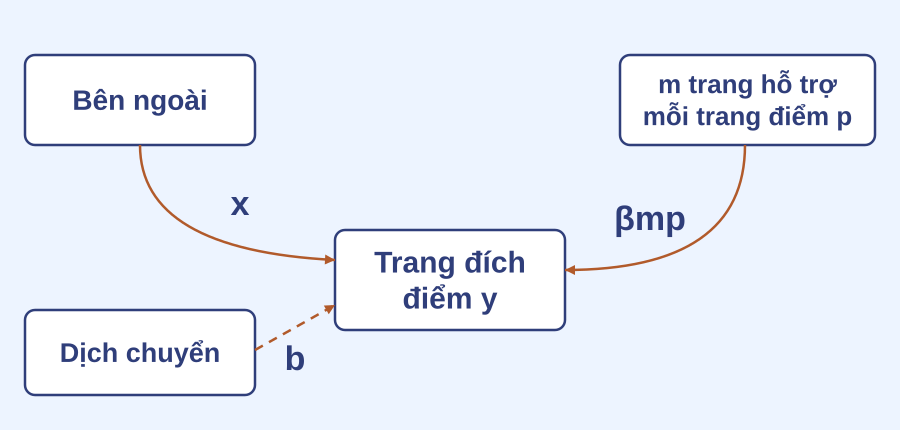
| Nguồn điểm tại đích | Đóng góp |
|---|---|
| Liên kết từ ngoài | $x$ |
| $m$ trang hỗ trợ, mỗi trang chỉ trỏ tới đích | $\beta mp$ |
| Dịch chuyển đều tới đích | $b$ |
Nguồn: MMDS, §5.4.2, tr.201.
Phần điểm bắt nguồn từ đích đi qua hai bước theo liên kết:
Với $p=\beta y/m+b$ và $y=x+\beta mp+b$:
$$y=x+\beta^2y+\beta mb+b,$$ $$y=\frac{x+\beta mb+b}{1-\beta^2},\qquad b=\frac{1-\beta}{n}.$$
Hai bước tạo $\beta^2$; số hỗ trợ $m$ triệt tiêu trong phần điểm quay lại từ đích.
Nguồn: MMDS, §5.4.2, tr.201.
Bỏ hạng nhỏ do dịch chuyển trực tiếp $b$ tới đích (MMDS §5.4.2):
Với $\beta=0{,}85=17/20$:
| Thành phần | Hệ số |
|---|---|
| Đóng góp từ ngoài $x$ | $400/111\approx3{,}6036$ |
| Tỷ lệ trang hỗ trợ $m/n$ | $17/37\approx0{,}45946$ |
Cụm nhân đóng góp từ ngoài khoảng $3{,}6$ lần và nhận thêm khoảng $0{,}46\,m/n$, với $m/n$ là tỷ lệ trang web thuộc cụm.
Nguồn: MMDS, Ví dụ 5.11, tr.201.
Tìm các cấu trúc như cụm vừa phân tích và loại các trang khỏi chỉ mục.
Giới hạn: người tạo rác chuyển sang biến thể khác có cùng tác dụng; số biến thể gần như không giới hạn.
Sửa định nghĩa PageRank để tự hạ điểm trang rác, không cần định vị cụm.
Dùng thêm tập trang đã được đánh giá đáng tin.
Hướng thứ hai dẫn tới hai công thức: TrustRank và Spam Mass.
Nguồn: MMDS, §5.4.2–5.4.4, tr.200–203.
Mô hình cụm Hình 5.16, đồ thị không có nút cụt.
Câu hỏi:
Với $\beta=0{,}9$, tính hệ số của $x$ và hệ số của $m/n$ trong công thức xấp xỉ của $y$; so với $\beta=0{,}85$.
Mỗi trang hỗ trợ nhận thêm cạnh từ ngoài cụm. Xác định phương trình nào trong hai phương trình của $p$, $y$ phải đổi và số hạng được thêm.
Nguồn: MMDS, §5.4.2, tr.201.
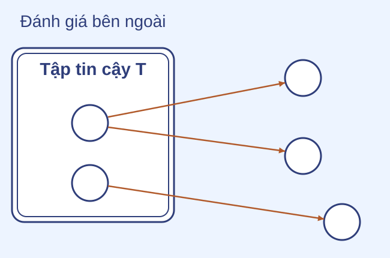
TrustRank: PageRank theo chủ đề, tập dịch chuyển $T$ là các trang tin cậy (tập hạt giống, seed set).
Cơ sở: trang rác dễ đặt liên kết tới trang tin cậy, nhưng trang tin cậy hiếm khi trỏ tới trang rác.
Chọn $T$ ngoài thuật toán: người xem xét các trang PageRank cao, hoặc lấy miền có kiểm soát (.edu, .gov).
Nguồn: MMDS, §5.4.3–5.4.4, tr.201–203.
Dùng lại thuật toán PageRank theo chủ đề với $r\mapsto\rho$, $v\mapsto v_T$; các thành phần khác giữ nguyên.
$T\ne\varnothing$; $(v_T)_i=1/|T|$ nếu $i\in T$, bằng $0$ ngoài $T$; khởi tạo $\rho^0=v_T$.
$\rho_i^t$: điểm TrustRank của trang $i$ ở vòng $t$; $\delta_\rho^t=\sum_{j:d_j=0}\rho_j^t$; $u$ đều trên $n$ trang.
Nguồn: MMDS, §5.4.4, tr.202–203; quy tắc bù và dừng kế thừa PageRank.
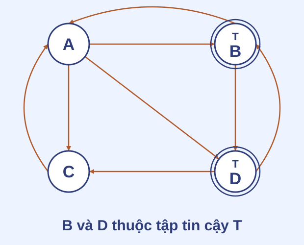
$\beta=4/5$. Giả sử B, D đã được đánh giá đáng tin: $T=\{B,D\}$, $v_T=(0,1/2,0,1/2)^\mathsf T$.
| Trang | TrustRank $\rho_i$ |
|---|---|
| A | $9/35$ |
| B | $59/210$ |
| C | $19/105$ |
| D | $59/210$ |
Cùng $v$ nên cùng nghiệm với ví dụ theo chủ đề; chỉ ý nghĩa của tập đổi sang độ tin cậy.
Nguồn: MMDS, §5.4.4; Ví dụ 5.10, tr.196–197, 202–203.
Ý tưởng: đo phần PageRank của trang không đến từ tập tin cậy.
Cùng G4, $\beta=4/5$: $r$ dùng dịch chuyển đều $u$; $\rho$ dùng $v_T$.
| Trang | PageRank $r_i$ | TrustRank $\rho_i$ | Hiệu $r_i-\rho_i$ |
|---|---|---|---|
| A | $9/28$ | $9/35$ | $9/140$ |
| B | $19/84$ | $59/210$ | $-23/420$ |
| C | $19/84$ | $19/105$ | $19/420$ |
| D | $19/84$ | $59/210$ | $-23/420$ |
A, C giảm điểm khi chuyển sang TrustRank ($r_i-\rho_i>0$); B, D tăng điểm ($r_i-\rho_i<0$).
Nguồn: MMDS, §5.4.5, tr.203; tính lại cùng β = 4/5.
Với $r_i>0$, Spam Mass là tỷ lệ của $r_i$ không được tập tin cậy giải thích: $$s_i=\frac{r_i-\rho_i}{r_i}=1-\frac{\rho_i}{r_i}.$$
| Trang | Phép tính | $s_i$ |
|---|---|---|
| A | $(9/140)/(9/28)$ | $1/5$ |
| B | $(-23/420)/(19/84)$ | $-23/95$ |
| C | $(19/420)/(19/84)$ | $1/5$ |
| D | $(-23/420)/(19/84)$ | $-23/95$ |
$s_i<0$ khi $\rho_i>r_i$. Cách đọc (MMDS §5.4.5): âm hoặc dương nhỏ thì có lẽ không phải rác; gần $1$ thì có lẽ là rác.
Nguồn: MMDS, §5.4.5, tr.203; tính lại cùng β = 4/5.
| Bước | Phạm vi chi phí |
|---|---|
| PageRank và TrustRank | Hai phép lặp thưa; mỗi vòng $\Theta(n+\ell)$ |
| Tính Spam Mass | $\Theta(n)$ phép tính theo đỉnh |
| Đánh giá hạt giống | Công việc ngoài mô hình phép toán đồ thị |
Trang có $s_i$ gần $1$ được ưu tiên rà soát hoặc hạ điểm, không cần định vị cụm thao túng.
Nguồn: MMDS, §5.4.3–5.4.5, tr.201–203.
MMDS Ví dụ 5.12 trên G4: $r_C=2/9$ (PageRank của Ví dụ 5.2); TrustRank với $T=\{B,D\}$: $\rho_C=38/210$.
Câu hỏi:
Tính $s_C$ và chỉ ra đại lượng làm kết quả khác $s_C=1/5$ ở trang Chỉ số Spam Mass.
Từ $s_A=1/5$, xác định có thể kết luận chắc chắn A là trang rác không và nêu căn cứ.
Nguồn: MMDS, §5.4.5, tr.203; tính lại từ G4.
PageRank và TrustRank gán mỗi trang một mức quan trọng. Ví dụ MMDS §5.5.1: trang danh sách học phần của một khoa có giá trị vì dẫn tới các trang học phần.
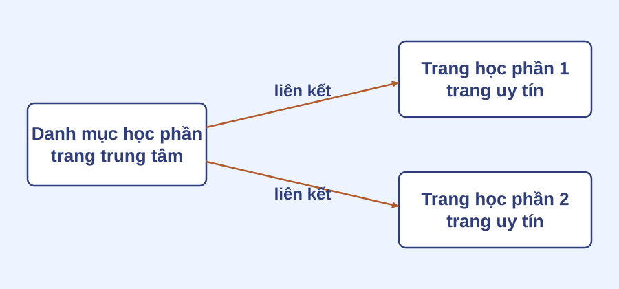
Thuật toán tìm kiếm theo chủ đề dựa trên siêu liên kết (HITS) gán mỗi trang hai điểm: trung tâm (hub) $h_i$ và uy tín (authority) $a_i$.
Trang uy tín cung cấp thông tin về một chủ đề; trang trung tâm chỉ ra nơi tìm thông tin đó.
Nguồn: MMDS, §5.5.1, Ví dụ 5.13, tr.204–205.
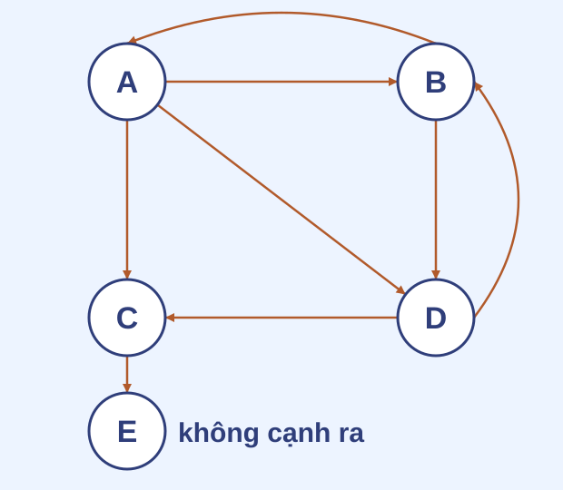
Đồ thị G5
Uy tín cộng trung tâm của các trang trỏ tới; trung tâm cộng uy tín của các trang được trỏ tới:
$$\tilde a_j=\sum_{i\to j}h_i,\qquad \tilde h_i=\sum_{i\to j}a_j.$$
Chỉ cộng thì giá trị tăng không giới hạn; sau mỗi bước chia cho thành phần lớn nhất.
E là nút cụt nhưng không cần dịch chuyển. Khởi tạo $h^0=(1,1,1,1,1)^\mathsf T$ theo thứ tự A,…,E.
Nguồn: MMDS, §5.5.2, Ví dụ 5.14, Hình 5.18, tr.205–206.
$h^0=(1,1,1,1,1)^\mathsf T$; G5 giữ nguyên.
| Trang | Nguồn liên kết vào | Uy tín thô $\tilde a_i$ | $a_i^1=\tilde a_i/2$ |
|---|---|---|---|
| A | B | $1$ | $1/2$ |
| B | A,D | $2$ | $1$ |
| C | A,D | $2$ | $1$ |
| D | A,B | $2$ | $1$ |
| E | C | $1$ | $1/2$ |
Uy tín thô của mỗi trang là tổng $h^0$ của các trang trỏ tới; chuẩn hóa: chia cho giá trị lớn nhất, bằng $2$.
Nguồn: MMDS, §5.5.2, Ví dụ 5.15, tr.206–207.
Dùng $a^1=(1/2,1,1,1,1/2)^\mathsf T$.
| Trang | Tổng uy tín theo cạnh ra | Trung tâm thô $\tilde h_i$ | $h_i^1=\tilde h_i/3$ |
|---|---|---|---|
| A | $1+1+1$ | $3$ | $1$ |
| B | $1/2+1$ | $3/2$ | $1/2$ |
| C | $1/2$ | $1/2$ | $1/6$ |
| D | $1+1$ | $2$ | $2/3$ |
| E | $0$ | $0$ | $0$ |
Bước trung tâm dùng uy tín vừa cập nhật $a^1$; chuẩn hóa: chia cho giá trị lớn nhất, bằng $3$.
Nguồn: MMDS, §5.5.2, Ví dụ 5.15, tr.206–207.
$h^1=(1,1/2,1/6,2/3,0)^\mathsf T$.
| Trang | $\tilde a$ | $a^2$ | $h^2$ |
|---|---|---|---|
| A | $1/2$ | $3/10$ | $1$ |
| B | $5/3$ | $1$ | $12/29$ |
| C | $5/3$ | $1$ | $1/29$ |
| D | $3/2$ | $9/10$ | $20/29$ |
| E | $1/6$ | $1/10$ | $0$ |
Tại A: $\tilde h_A=a_B^2+a_C^2+a_D^2=29/10$, trung tâm thô lớn nhất. Trung tâm của C và uy tín của E giảm dần; hai vector chưa ổn định.
Nguồn: MMDS, §5.5.2, Ví dụ 5.15, tr.206–207.
$L_{ij}=1$ khi $i\to j$, bằng 0 nếu không; hàng là trang nguồn.
| Biểu diễn | Vị trí của cạnh $i\to j$ | Giá trị |
|---|---|---|
| HITS: $L$ | Hàng $i$, cột $j$ | $1$ |
| PageRank: $M_0$ | Hàng $j$, cột $i$ | $1/d_i$ |
HITS cộng điểm qua cạnh; không chia bậc ra.
Nguồn: MMDS, §5.5.2, Hình 5.19, tr.206.
Phép chia trong các vết trên là chuẩn hóa theo thành phần lớn nhất. Với vector không âm $q$ có $\max_iq_i>0$: $$N(q)=\frac{q}{\max_iq_i}.$$
Chuẩn hóa giữ tỷ lệ và thứ hạng các thành phần; giá trị lớn nhất trở thành 1.
Ví dụ: $N\big((1,2,2,2,1)^\mathsf T\big)=(1/2,1,1,1,1/2)^\mathsf T$; tổng kết quả bằng 4.
Điểm HITS không là phân phối xác suất. Với đồ thị không cạnh, vector thô bằng 0 nên phép chuẩn hóa không xác định.
Nguồn: MMDS, §5.5.2, tr.206–207.
Đầu vào: đồ thị có ít nhất một cạnh; $\tau>0$, số vòng tối đa $K\ge1$.
h ← vector toàn 1; a ← vector toàn 1
với t = 0, ..., K - 1:
a_new ← N(L chuyển vị * h)
h_new ← N(L * a_new)
Delta_a ← max |a_new[i] - a[i]|
Delta_h ← max |h_new[i] - h[i]|
a ← a_new; h ← h_new
nếu max(Delta_a, Delta_h) ≤ tau:
trả về (h, a, đạt ngưỡng)
trả về (h, a, hết số vòng)
Đầu ra gồm hai vector và trạng thái dừng; đồ thị không cạnh trả trạng thái không xác định khi chuẩn hóa bằng giá trị lớn nhất.
Nguồn: MMDS, §5.5.2, tr.206–207.
Ở điểm ổn định, chuẩn hóa chỉ đổi độ lớn ($\propto$: tỷ lệ với, hệ số dương): $$a\propto L^\mathsf Th,\qquad h\propto La.$$
Thế quan hệ này vào quan hệ kia: $$h\propto LL^\mathsf Th,\qquad a\propto L^\mathsf TLa.$$
$h$ là vector riêng của $LL^\mathsf T$, $a$ là vector riêng của $L^\mathsf TL$. Giới hạn duy nhất khi trị riêng lớn nhất chỉ có một hướng riêng và khởi tạo có thành phần theo hướng ấy.
Nguồn: MMDS, §5.5.1–5.5.2, tr.204–207; phác thảo có điều kiện.
Mô hình: danh sách cạnh, $n$ đỉnh, $\ell$ cạnh; phép toán vô hướng chi phí đơn vị.
| Công việc mỗi vòng | Phép đếm |
|---|---|
| Cộng $h$ tại nguồn vào $a$ tại đích | $\ell$ cạnh |
| Cộng $a$ mới tại đích vào $h$ tại nguồn | $\ell$ cạnh |
| Chuẩn hóa, so sánh các vector | Số lượt cố định trên $n$ đỉnh |
Thời gian $\Theta(n+\ell)$ mỗi vòng; bộ nhớ phụ $\Theta(n)$, đầu vào $\Theta(n+\ell)$.
Không dựng $LL^\mathsf T$ hoặc $L^\mathsf TL$ để chạy vì chúng có thể đặc hơn $L$.
Nguồn: MMDS, §5.5.2, tr.206–207; đếm theo danh sách cạnh.
Từ vòng thứ hai: $h^2=(1,\,12/29,\,1/29,\,20/29,\,0)^\mathsf T$.
Câu hỏi:
Tính uy tín thô $\tilde a_D$ và điểm chuẩn hóa $a_D^3$.
Giải thích vì sao đóng góp của A vào $\tilde a_D$ không chia cho ba liên kết ra của A.
Tính $a_E^3$; giải thích vì sao E có uy tín dương dù không có cạnh ra.
Nguồn: MMDS, Hình 5.18 và Ví dụ 5.15, tr.206–207.
| Phương pháp | Đầu ra | Thông tin bổ sung cần có |
|---|---|---|
| PageRank theo chủ đề | Một phân phối điểm theo ngữ cảnh | Phân phối dịch chuyển $v$ |
| TrustRank | Một phân phối điểm từ tập tin cậy | Hạt giống được đánh giá bên ngoài |
| Spam Mass | Chênh lệch tương đối giữa $r$ và $\rho$ | Hai vector cùng mô hình, $r_i>0$ |
| HITS | Hai vector trung tâm và uy tín | Tổng theo cạnh vào và cạnh ra |
Điểm uy tín HITS và điểm tin cậy TrustRank có ý nghĩa khác nhau.
Nguồn: MMDS, §5.3–5.5, tr.195–208.
| Yêu cầu đã xét | Phương pháp và điều kiện |
|---|---|
| “jaguar” theo động vật hoặc ô tô | PageRank theo chủ đề, khi đã có chủ đề hoặc trọng số |
| Đánh giá ảnh hưởng liên kết thao túng | TrustRank và Spam Mass, khi có tập tin cậy phù hợp |
| Danh sách và nội dung học phần | HITS, khi cần cả điểm trung tâm và uy tín |
Các phép lặp đều khai thác đồ thị thưa. Cùng bậc chi phí mỗi vòng không bảo đảm cùng số vòng hoặc cùng thời gian thực.
Nguồn: MMDS, §5.3–5.5, tr.195–208.
Câu hỏi:
Nguồn: MMDS, §5.3–5.5, tr.195–208.
Câu hỏi:
Trong cụm thao túng, $x$ đã là đóng góp từ ngoài sau nhân $\beta$. Giải thích vì sao phương trình điểm đích chứa $x$ thay vì $\beta$ $x$.
Trang B có $r_B=19/84$, $\rho_B=59/210$. Xác định dấu Spam Mass; đánh giá việc thay mọi giá trị âm bằng 0.
Mạng học phần cần nhận diện cả trang danh sách và trang nội dung. Chọn phương pháp đã học; nêu ý nghĩa của hai đầu ra.
Nguồn: MMDS, §5.3–5.5, tr.195–208.
Bài 5.3.1(a, b), MMDS §5.3.5, trang 199.
$\beta=0.8$, kế thừa Ví dụ 5.10; tám cạnh của G4 giữ nguyên.
Câu hỏi: Tính PageRank theo chủ đề khi tập dịch chuyển là (a) chỉ A; (b) A và C.
Sản phẩm: hai phân phối dịch chuyển, hai vector điểm theo thứ tự A,B,C,D, hệ phương trình và phép kiểm tổng 1/điểm cố định.
Nguồn: MMDS, Bài 5.3.1(a,b), §5.3.5, tr.199.
Bài 5.4.1(a, c), MMDS §5.4.6, trang 203–204.
Giữ mô hình Hình 5.16 trên đồ thị không nút cụt: đích vẫn chỉ trỏ tới $m$ hỗ trợ; các hỗ trợ không nhận liên kết từ ngoài cụm; mọi cạnh ngoài vào cụm tới đích. $x$ đã gồm $\beta$; $b=(1-\beta)/n$.
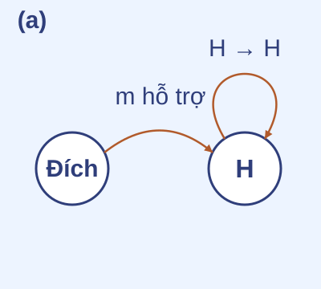
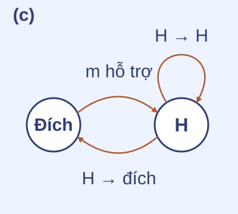
Câu hỏi: Lặp lại phân tích khi mỗi trang hỗ trợ (a) chỉ trỏ tới chính nó thay vì đích; (c) trỏ tới cả chính nó và đích.
Sản phẩm: phương trình điểm hỗ trợ $p$ và điểm đích $y$; biểu thức của $y$ theo $x,m,n,\beta$; chỉ rõ công thức chính xác hay xấp xỉ.
Nguồn: MMDS, Bài 5.4.1(a,c), §5.4.6, tr.203–204.
Bài 5.5.2, MMDS §5.5.3, trang 208; Hình 5.9, trang 189.
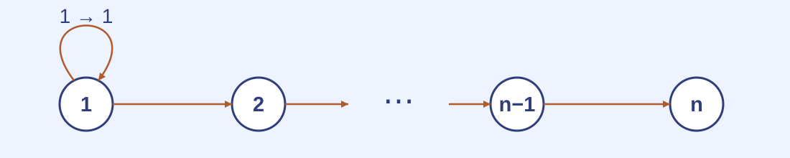
Đồ thị có $n$ đỉnh, cạnh $1\to1$ và $i\to i+1$ với $1\le i<n$; $n\ge1$.
Khởi tạo $h^0=a^0=\mathbf1$; sau mỗi phép nhân, chuẩn hóa phần tử lớn nhất bằng 1.
Câu hỏi: Tính các vector trung tâm và uy tín theo $n$.
Sản phẩm: hai vector giới hạn, lập luận từ phép lặp hoặc ma trận, và các trường hợp biên $n=1$, $n=2$.